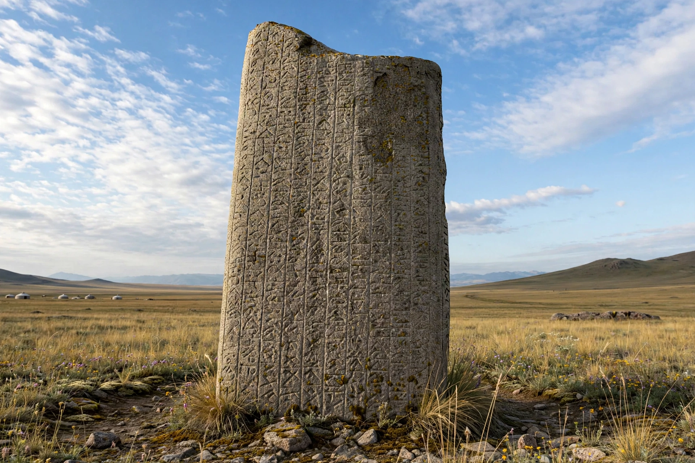

Old Turkic script
| Old Turkic script | |
| Type | Alphabet |
|---|---|
| Languages | Old Turkic |
| Time period | 8th–10th centuries |
| Direction | Right-to-left |
| Unicode range | U+10C00–U+10C4F (Old Turkic) |

The Old Turkic script (also known as the Göktürk script, Orkhon script, or Turkic runes) was the alphabet used by the Göktürks and other early Turkic khanates during the 8th to 10th centuries to record the Old Turkic language. It is named after the Orkhon Valley in Mongolia, where the inscriptions were discovered in the early 19th century.
Origins and use
The script is usually held to derive from varieties of the Aramaic alphabet, transmitted via the Sogdian script, although the angular, runiform shapes suggest adaptation to carving in wood and stone. It was used by the Turkic Khaganates centred in Mongolia and is best known from the large memorial stelae erected for princes of the Second Turkic Khaganate, including the Orkhon inscriptions of Kul Tigin and Bilge Qaghan and the inscription for the chancellor Tonyukuk.
Characteristics
The script is written from right to left. In its classical Orkhon form it has 38 characters. A notable feature is its system of paired consonant signs: most consonants have two forms, one used with back-vowel words and one with front-vowel words, so vowels — especially in non-initial syllables — are frequently omitted. Words are typically separated by a colon-like divider.
Decipherment
The inscriptions were deciphered in 1893 by the Danish philologist Vilhelm Thomsen, working in friendly competition with the Russian turkologist Vasily Radlov, who published the first translations. The decipherment revealed the earliest extensive prose texts in any Turkic language.
Variants
Regional variants are conventionally grouped as the Orkhon, Yenisei and Talas traditions. The Yenisei inscriptions of Kyrgyzstan and Siberia include numerous short epitaphs. The script was later replaced in most regions by the Old Uyghur alphabet and, subsequently, the Arabic script.